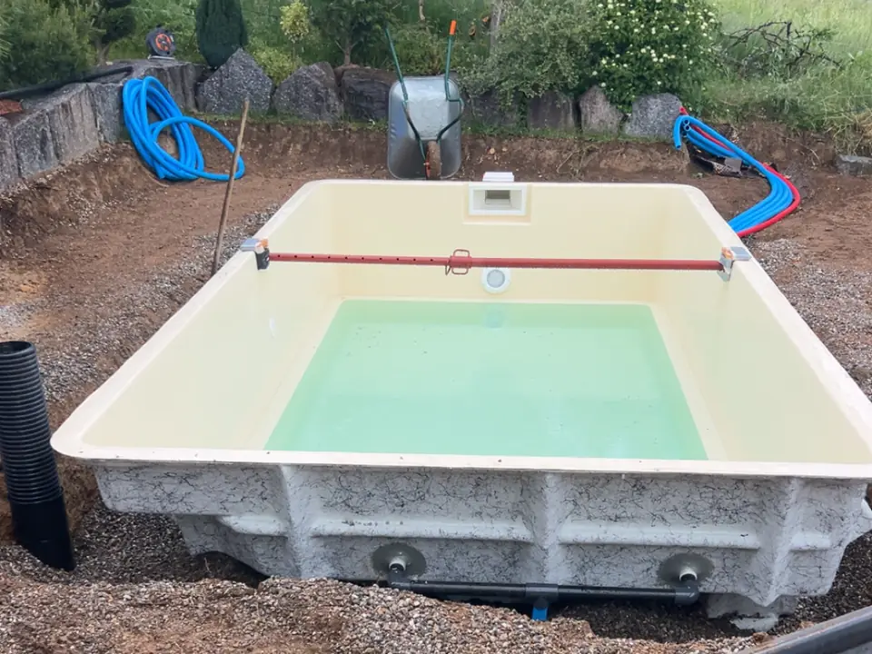
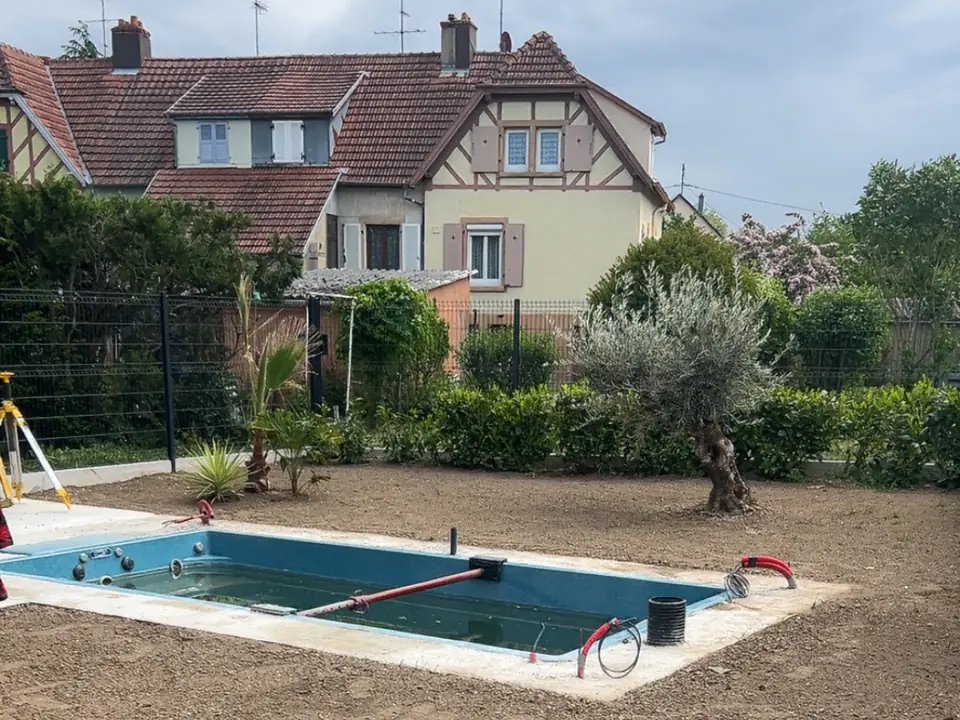

Avant le chantier
- Les formalités : en général, une déclaration préalable en mairie pour un bassin de 10 à 100 m², un permis de construire au-delà ou avec un abri haut. Renseignez-vous en mairie : le plan local d’urbanisme peut ajouter des règles.
- L’accès : la coque arrive en un seul morceau sur un camion, puis se pose à la pelle ou à la grue. Il faut un passage jusqu’au jardin.
- La sécurité : une piscine enterrée doit avoir un dispositif de sécurité normalisé, barrière, couverture, abri ou alarme.
Les étapes de la pose
- Implantation : on trace l’emplacement du bassin et on relève les niveaux du terrain.
- Terrassement : on creuse un peu plus grand que la coque, pour travailler autour, et on évacue les terres.
- Lit de pose : un fond plat et compacté, sur lequel la coque reposera de niveau.
- Mise en place de la coque, puis réglage du niveau.
- Remblai et mise en eau en même temps : on remplit le bassin pendant qu’on remblaie autour, couche par couche, pour que la pression reste égale de chaque côté des parois.
- Finitions : raccordements de la filtration, ceinture en béton en haut du bassin, margelles et plage.

Ce qui fait durer une piscine coque
- Un terrain bien préparé : sur un sol argileux ou humide, le terrassement et le lit de pose demandent plus de soin, parfois un drainage.
- Une coque jamais vidée sans précaution : vide, elle peut se déformer ou remonter sous la pression de l’eau du sol.